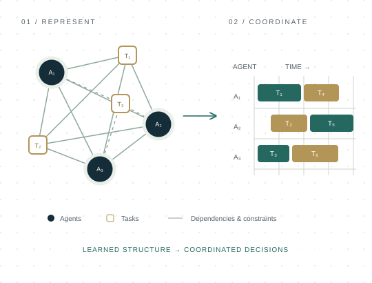

Graph-based coordination
Representing agent capabilities, task dependencies, and temporal constraints with heterogeneous graphs and transformers.
ROBOTICS · MACHINE LEARNING · COORDINATION
I develop machine learning methods that help robots and people work together.
I’m a Computer Science Ph.D. student in the School of Interactive Computing at Georgia Tech, advised by Prof. Matthew Gombolay in the CORE Robotics Lab. My research brings graph neural networks and reinforcement learning to multi-agent task allocation, scheduling, and motion planning.
I’m especially interested in making coordination scalable, adaptive, and interpretable, enabling learned policies can support complex teams in real-world settings.
Interested in research internships in robotics and machine learning.
01 / RESEARCH
Learning structured decisions
under real-world constraints.
Representing agent capabilities, task dependencies, and temporal constraints with heterogeneous graphs and transformers.
Learning task allocation, scheduling, and motion-planning policies for heterogeneous teams with reinforcement learning.
Connecting learned policies with understandable decision structures to support human–robot collaboration.
FEATURED WORK / NeurIPS 2025
TARGETNET uses a residual heterogeneous graph transformer to jointly assign tasks and generate schedules, accounting for agent capabilities, travel times, and temporal constraints.

HETEROGENEOUS GRAPH JOINT ASSIGNMENT & SCHEDULING
02 / PUBLICATIONS
4 publications
ROBOTICS: SCIENCE AND SYSTEMS
HINT combines hierarchical reinforcement learning, adaptive teacher training, and performance-based filtering to transfer centralized knowledge to decentralized agents in cooperative multi-agent settings.
NEURAL INFORMATION PROCESSING SYSTEMS
A residual heterogeneous graph transformer jointly assigns and schedules tasks for mobile robot teams. The learned model generalizes from smaller training instances to problems with up to 40 agents and 200 tasks.
CURRENT ROBOTICS REPORTS
A review of challenges for fluent human–robot teaming, including communication, human behavior modeling, long-term interaction, scalability, safety, privacy, ethics, benchmarking, and wellbeing.
IEEE/RSJ INTERNATIONAL CONFERENCE ON INTELLIGENT ROBOTS AND SYSTEMS
HybridNet combines a heterogeneous graph encoder with a recurrent schedule propagator to coordinate human–robot teams while modeling stochastic human task performance and learning over repeated rounds.
03 / PROJECTS
Exploring learning and autonomy
across different environments.
LANGUAGE & MULTI-AGENT SYSTEMS
An adversarial tabletop-game environment supporting reinforcement learning policies and natural-language commands, with foundation-model fine-tuning and evaluation against RL agents.
Python / LLaMA / GPT / Reinforcement learning
LEARNING FROM DEMONSTRATION
A custom pick-and-place simulation with execution noise, exploring noise-free pretraining for behavior cloning before learning policies in noisy environments.
Python / OpenAI Gym / Imitation learning
PERCEPTION & AUTONOMY
Vision-based line and intersection detection paired with localized SLAM and path finding for semi-autonomous navigation through indoor corridors.
Python / Computer vision / SLAM / Raspberry Pi
04 / BACKGROUND
AUG 2023 — PRESENT
Georgia Tech · CORE Robotics Lab
Graph learning and reinforcement learning for multi-agent allocation, scheduling, and path planning.
JUL 2022 — AUG 2023
Georgia Institute of Technology
Led graduate researchers in multi-agent coordination and developed simultaneous scheduling methods.
AUG 2021 — MAY 2022
Georgia Tech · CS 6476: Computer Vision
Supported instruction in the OMSCS program.
JUN — AUG 2021
Halliburton · Houston, TX
Unsupervised learning and neural models for industrial time-series prediction and anomaly characterization.
AUG 2023 — PRESENT
Georgia Institute of Technology
School of Interactive Computing
Advisor: Prof. Matthew Gombolay
AUG 2020 — MAY 2022
Georgia Institute of Technology
Computational Perception and Robotics
AUG 2014 — DEC 2019
University of Michigan, Ann Arbor
Computer Science & Mechanical Engineering
05 / GET IN TOUCH
For research collaborations, internship opportunities,
or a conversation about robot-team coordination.